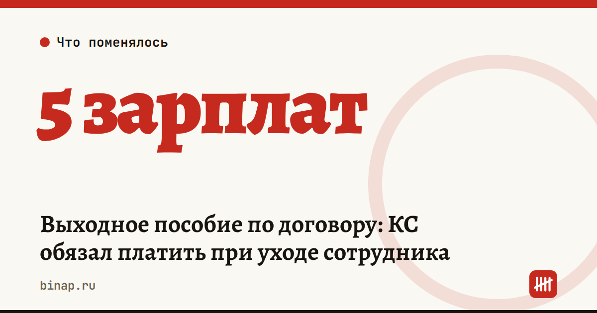

Выходное пособие по договору: КС обязал платить при уходе сотрудника

Если выплата при увольнении прописана в трудовом договоре и не противоречит закону, работодатель должен её заплатить — даже когда сотрудник ушёл по собственному желанию. Суд не вправе отказать работнику во взыскании. Так решил Конституционный суд в постановлении от 13 октября 2026 года № 59-П (по данным КонсультантПлюс).
Коротко
- Речь о выплатах при расторжении договора сверх тех, что требует закон, — «золотых парашютах» и компенсациях.
- В деле два бывших работника: по договору им полагалось пять среднемесячных зарплат при увольнении, компания отказалась платить (по данным «Клерка»).
- Работодатель не может произвольно отказаться от обязательства, которое сам взял в договоре.
- Оговорка суда: в отдельных случаях такая выплата может не соответствовать критериям разумности.
Что это значит
- Пункт о выплате при увольнении — обязательство, а не формальность. «Ушёл сам» его не отменяет, если договор не ограничивает основания.
- Расчёт редакции: при среднемесячном заработке 80 000 ₽ пять зарплат — 400 000 ₽ на одного человека. Если такие пункты есть у руководителя и пары менеджеров, сумма вырастает кратно.
- Оспорить размер можно, только если он явно несоразмерен. Рассчитывать на это не стоит.
- Закон не обязывает платить такие компенсации. Условия пишет сам работодатель — и сам за них отвечает.
Налоги и взносы с выплаты
Выходные пособия и компенсации при увольнении не облагаются НДФЛ и страховыми взносами в пределах трёх среднемесячных заработков (для Крайнего Севера и приравненных местностей — шести). С суммы сверх этого лимита удерживают НДФЛ и начисляют взносы. В примере выше это две зарплаты из пяти — 160 000 ₽ (расчёт редакции).
Как ошибки в зарплатных платёжках оборачиваются штрафами — в статье до 100 000 ₽ за одну ошибку в платёжке, про пониженные взносы — в разборе взносы 15% для МСП.
Что сделать сейчас
- Найдите в действующих трудовых договорах пункты о выплатах при расторжении и выпишите суммы и основания.
- Решите, оставлять ли такие условия в новых договорах. Если оставляете — пропишите точно: при каких основаниях увольнения выплата положена и в каком размере.
- Заложите в бюджет выплаты по уже подписанным договорам: отказаться от них в одностороннем порядке не получится.
- Если платите бонусы и компенсации отделу продаж, свяжите их с результатом, а не с фактом увольнения. Как строить мотивацию небольшого отдела — в пяти уроках отдела продаж.
Частые вопросы
Надо ли платить пособие, если сотрудник уволился сам? Да, если выплата прописана в договоре, закону не противоречит и договор не ограничивает её другими основаниями увольнения.
Можно ли отказаться от выплаты? В одностороннем порядке — нет. Оспорить можно только явно несоразмерный размер.
Касается ли это ИП-работодателей? Да, правило общее для всех трудовых договоров.